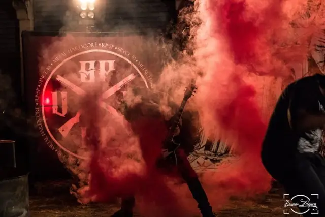

Bem-vindo ao caos de “Worldwide Suicide” da Violência Moral – Entrevista

Peso pesado! Se a sua internet conseguiu abrir o link desta matéria, sinta-se feliz, porque o link é de peso, bem como a banda que vem aí.
A Violência Moral, recentemente lançou o clipe da música “Worldwide Suicide“. Para a gravação e produção deste trabalho, a banda da cidade de Ribeirão Preto contou com a Kauzare Filmes.
Ao todo são mais de três minutos e meio de porrada em uma produção onde a banda toca em meio a gritos, tiro e fogo. A música fala sobre a situação de perigo, tragédia e degradação em que a sociedade se encontra. De forma direta, curta, grossa e pesada, a banda fala a respeito da miséria e da falta de esperança com relação à melhorias na situação.
“Tente levantar, depois da queda
E veja se alguém se importa, viva do jeito que dá
Veja todos se matar”
De acordo com o guitarrista Guilherme, a gravação e produção do vídeo aconteceu em meio a muita correria. Com a repercussão positiva que o clipe tem tido, agora a banda entra em outra correria a fim de conquistar ainda melhores resultados com o trabalho.
“Tá do caralho mano. Grandes nomes e amigos elogiaram e muito o clipe. Foi um puta corre e foi uma baita semente semeada, agora estamos trabalhando 30 horas por dia, para colher tudo que temos direito!”, comentou Guilherme.
A banda surgiu em 2015 e conta com Eduardo Muralha (voz), Guilherme de Paula (guitarra), Marcelo Oliveira (baixo), João Oliveira (guitarra) e Leonardo Sampaio (bateria). O estilo traz influências do Hardcore e do Metal, de nomes como Ratos de Porão, Sepultura, Project46, Metallica, Pantera, entre outros.
O Papo Alternativo entrevistou a Violência Moral, que nos contou a respeito do surgimento da banda, o clipe de “Worldwide Suicide”, as temáticas das músicas do grupo, planos, entre outros assuntos. Confiram a entrevista logo abaixo.
Crédito da foto: Bruno Zaqueu
(Papo Alternativo) Olá, galera. Primeiramente, muito obrigado por conversarem com o Papo Alternativo. Para começar, conta pra gente como e quando a banda começou e o significado para vocês do nome “Violência Moral”?
(Violência Moral) Salve Salve. Sempre bom podermos falarmos um pouco das nossas origens e planos.
A história de como a banda começou é muito grande, mas posso resumir que desde moleque, o vocal Eduardo e o guita Guilherme sempre tiveram projetos juntos. Então um dia, um outro amigo nosso, batera Eduardo (ex-batera da banda), chamou para fazermos um projeto – o Evangelizha.
Gravamos um EP (raridade) chamado “Guerra“. E esse projeto foi ganhando força até entrar todos os integrantes. Então gravarmos o CD “WWS“, porém por diversos motivos resolvemos mudar o nome da banda. E olha que engraçado: Tinhamos o CD mais não tínhamos o nome da banda. haha Então voltamos os olhos para as músicas e o nome de uma delas chamou a nossa atenção, que é a música “Violência Moral“, que significa a agressividade em expor as ideias, um soco na mente. Foi unânime. Todos curtiram o nome, e assim foi marcado por uma nova era. Tudo novo, do zero!!! Então lançamos o CD e assim começou o corre em dezembro de 2015.
(Papo Alternativo) Recentemente vocês lançaram o clipe “Worldwide Suicide”. Como foi a gravação dele e por que optaram por essa música?
(Violência Moral) “Worldwide Suicide” é o nosso maior single. Foi uma música que surgiu de forma despretensiosa. É uma verdadeira pedrada na mente. No show ela é insana!!! E por não termos nenhum vídeo clipe, decidimos gravar ela, para justamente passar essa energia do show. Não queríamos história nem nada, queríamos mostrar nossa cara primeiro. Esse foi nosso cartão de visita.
Crédito da foto: Bruno Zaqueu
(Papo Alternativo) A letra da música fala sobre miséria e traz um ar de falta de esperança, fim da linha, sem solução. O significado é esse realmente, ao pé da letra, curto e grosso, ou ainda existe uma mensagem para se levantar, depois da queda e se livrar, ser a diferença? Como vocês enxergam a situação?
(Violência Moral) Cara, o mundo está um caos, e tenho minhas dúvidas se há esperança para isso. E a letra é bem ao pé da letra. O “Worldwide Suicide” ou “Suicídio Coletivo”, retrata na cara que esse é o nosso fim, nos vemos e nos matamos, e não fazemos nada para mudar.
(Papo Alternativo) As outras músicas de vocês tratam de quais assuntos?
(Violência Moral) Tratamos de vários assuntos. Desde religião, abuso infantil, máfia, política. Mas sempre na forma mais na cara possível, sem rodeios.
(Papo Alternativo) Além de vocês, existem outras bandas que demonstram muita maturidade e profissionalização do trabalho, na cena de Ribeirão Preto. Abiosi e Cativeiro das Ideias, e até outras bandas da cena underground da cidade, se enquadram nisso. Como têm sido essa situação? Vocês também têm notado essa evolução, essa preocupação que as bandas da cidade têm?
(Violência Moral) Sim. Não é à toa que são bandas que estão na cena há anos e até décadas. A necessidade gera a mudança. E hoje quem não é profissional, roda!
(Papo Alternativo) Ter uma banda não é uma tarefa fácil. Viver de música muito menos. Quais os principais prós e contras que vocês encontram diariamente no lance de ter uma banda e estar crescendo dentro da cena independente?
(Violência Moral) Com certeza! Mas de longe a tarefa mais difícil é conseguir o espaço, quebrar aquela panela que está formada à anos, e mostrar o seu som. Em meio à crise, todos querem vender, e, infelizmente o Metal nacional, às vezes não vende tanto, principalmente no começo.
E os prós é que, quando você faz um fã, pow esse cara vai lembrar de você a vida toda. Chegar em algum rolê, ver várias pessoas usando a sua camisa levando o nome da sua camisa no peito, sem nem mesmo estar tocando, isso é extremamente gratificante!
(Papo Alternativo) Quais os planos da Violência Moral para o futuro?
(Violência Moral) Muitos. Vamos desbravar o Brasil e não vai demorar. Já temos algumas datas para fora e algumas para bem longe. Tudo está se acertando. Pensamos em um CD novo, porém esse “WWS” vai render muito ainda.
(Papo Alternativo) Galera, a entrevista está chegando ao fim. Gostaria mais uma vez de agradecer pelo bate papo. Essa última questão é reservada para vocês deixarem um recado ao pessoal que acompanhou nossa entrevista.
(Violência Moral) Manos, puta honra fazer parte dessa entrevista. E você que leu até aqui, saiba que o Violência Moral é o que é graças a vocês!!!
Curtam nossa página no Facebook se inscrevam no canal no YouTube que vai rolar muita coisa nesse fim de ano! Noizzz
Crédito da foto: Bruno Zaqueu
Confiram o clipe de “Worldwide Suicide” e o álbum “WWS” nos links abaixo e acompanhem o trabalho da “Violência Moral“, através da página oficial da banda no Facebook.